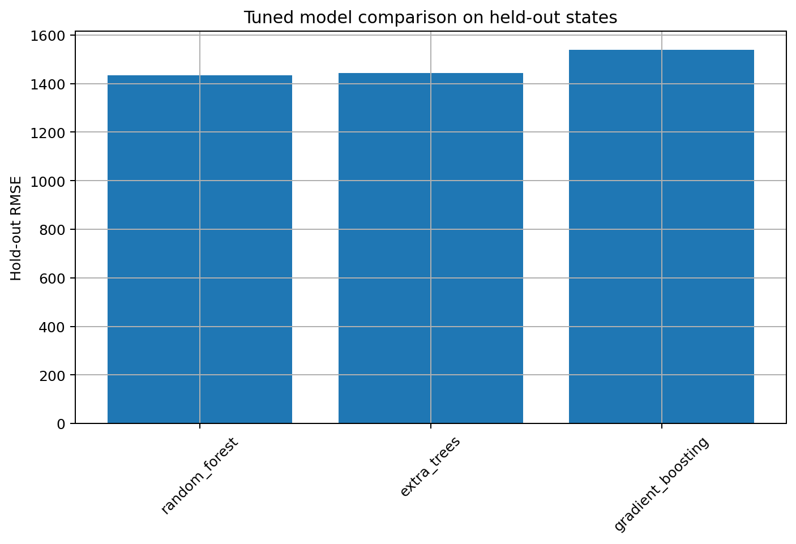

Abstract
Nigeria's crop yield varies across geography, rainfall, temperature, seasonality, and crop type. This project asks whether survey tables, climate signals, and remote sensing can be combined to model those differences in a leakage-aware way.
The repository includes a reproducible pipeline, notebook walkthrough, model comparison, residual analysis, and a dashboard story designed like a short research paper.
Research question
Can we explain yield variation across Nigerian states and agroecological zones using survey, climate, and satellite features?
Use the chips below to change the summary focus.
Why This Project Matters
Crop yield is not just a number. It compresses rainfall timing, heat stress, humidity, vegetation condition, crop choice, and farming practice into a single measurement. In a country as geographically diverse as Nigeria, national averages can hide major regional differences.
The project turns that broad agricultural question into a machine learning problem: can we predict yield from survey data and geospatial covariates in a way that is accurate, interpretable, and honest about its limitations?
What the site teaches
- what the target variable means
- why leakage control matters
- how climate and satellite data enter the model
- why residual analysis matters as much as accuracy
Data
The core source is the NBS National Agricultural Sample Survey 2022/2023 report tables. These tables supply the target yield and the main agricultural context. The processed table in the repository summarizes 1,053 rows, of which 490 are state-level rows with yield values.
NBS survey tables
State-level crop yield records built from the NASS 2022/2023 workbook.
Climate covariates
Rainfall, temperature, humidity, and heat-stress proxies from climate sources.
Remote sensing
Sentinel-2 vegetation indices such as NDVI, EVI, NDWI, and SAVI.
What data are included in the repository?
data/raw/nbs/nass_report_tables_2022_2023.xlsxdata/processed/nbs_crop_yield_state_zone_2022_2023.csvdata/processed/state_metadata.csvdata/processed/modeling_dataset.csv
What data are optional?
- NiMet station climate data
- NASA POWER fallback climate data
- Sentinel-2 extraction outputs
Repository Structure
Why the structure matters
The repository separates raw data, processed data, scripts, notebooks, reports, and reusable Python code. That organization is part of the scientific method because it makes the pipeline reproducible and auditable.
How to read the repo
Read notebooks for narrative understanding, scripts for reproducibility, reports for outputs, and the website for the synthesized story. The app and website are not separate distractions; they are communication layers for the same analysis.
crop-yield-nigeria-geoai/ |-- app/ |-- configs/ |-- data/ |-- docs/ |-- notebooks/ |-- reports/ |-- scripts/ |-- src/nigeria_crop_yield/ |-- tests/ `-- streamlit_app.py
Methods
The project follows a familiar data science sequence: audit the data, engineer features, control leakage, train multiple models, evaluate them on held-out data, and inspect the errors.
Audit the source workbook and clean the crop-yield table.
Build a modeling dataset with leakage control and state metadata.
Train baseline and tree-based models and compare metrics.
Inspect residuals by crop, zone, state, and season.
How feature engineering works
The final modeling table combines survey variables, state metadata, climate summaries, and vegetation indices. Because the model expects a table, time-series climate and satellite information is condensed into seasonal summaries. This is a practical compromise between realism and usability.
Why leakage control matters
If harvested area or production is used directly as a predictor of yield, the model can appear much better than it really is. The project removes those leakage-prone fields so the predictions reflect genuine learned structure rather than target reconstruction.
Results
The tuned results show that tree-based models outperform the baseline and the simpler linear alternatives. This suggests the crop-yield signal is nonlinear and depends on interactions among crop, climate, zone, and state.
How to read the results
- RMSE penalizes large mistakes more strongly.
- MAE is the average absolute error in kg/ha.
- R2 measures explained variance relative to a mean baseline.
- MAPE expresses error as a percentage and is useful but unstable near zero.
Explainability
Explainability answers the question: what is the model using to make its predictions? In this project, feature importance, permutation importance, partial dependence, and subgroup residual tables are used to open up the model.
What drives error?
The report includes crop-level bias, zone-level residuals, and feature-importance views.
Best model
Random Forest performed best in the tuned results, with the strongest balance of RMSE, MAE, and R2.
Why explanation is not causality
A feature can be important to the model without being the real-world cause of yield change. Importance means predictive utility inside the fitted model, not necessarily an actionable intervention effect.
Gallery
These figures are the visual proof of the story. Each one corresponds to a notebook output and should be included in the textbook where the matching concept is discussed.




Visual Story

How to read the story
The project begins with the public survey table, adds climate and remote-sensing context, then trains models and checks where they fail. The figures here are meant to help a non-technical visitor see the narrative from data to interpretation.
If you are looking at the report on GitHub Pages, all figures now live inside the published site so they load directly in the browser.
Limitations
The project is strong as an educational and exploratory GeoAI study, but it still has real limitations. The data are state-level, not plot-level. The satellite summaries are coarse approximations. Some climate inputs are optional or fallback-based. And the model is predictive rather than causal.
Main threats to validity
- Aggregation hides local variation.
- Seasonal summaries may not align perfectly with crop calendars.
- Measurement noise may remain in survey tables.
- Some crops are sparse.
- Random splits can overstate performance if grouping is ignored.
Future Work
The strongest future direction is to move from coarse state-level summaries to plot-level geospatial data. That would allow better climate alignment, better remote sensing, stronger validation, and more actionable policy support.
Better spatial data
Use plot or farm coordinates instead of centroids.
Uncertainty
Predict intervals, not only point estimates.
Policy tools
Build risk maps and crop-specific decision support.